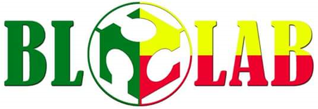

Le paysage numérique du Bénin est en pleine transformation, marqué par une évolution
rapide des technologies et une adoption croissante des services numériques.Au cœur de cette dynamique se trouvent
des institutions et des acteurs clés qui jouent un rôle déterminant dans la construction et la régulation de cet
écosystème.
1- Ministère du numérique et de la digitalisation
Le ministère du numérique et de la digitalisation est le département ministériel du gouvernement béninois, situé dans la Rue 440 à cotonou et chargé de la mise en œuvre de la politique du Gouvernement dans les domaines conception, la mise en œuvre, le suivi et l’évolution de la politique générale de l’Etat en matière d’économie numérique, de la communication et
des services postaux, conformément aux conventions internationales, lois et règlements en vigueur en République du Bénin..
La mission du ministère est de conduire la mise en œuvre de l'agenda numérique de l'État en élaborant des politiques sectorielles et des stratégies adaptées. Il s'efforce de développer les infrastructures, les usages et les contenus numériques grâce à des technologies innovantes, tout en modernisant l'administration pour offrir des services publics plus performants. Le ministère veille également à la transformation digitale des entreprises et à l'établissement des infrastructures nécessaires à la diffusion numérique de la télévision et de la radio. Enfin, il soutient la promotion des communications
électroniques et des services numériques innovants en collaboration avec l'Autorité de Régulation.
Pour plus d'information consultez: Ministère du numérique et de la digitalisation
.
2- Agence des Systèmes d'Information et du Numérique
L'Agence des Systèmes d'Information et du Numérique (ASIN) est une institution gouvernementale essentielle au Bénin,
créée par décret le 1er juin 2022. Située à Cotonou , elle résulte de la fusion de quatre agences clés du secteur numérique : l'Agence pour
le Développement du Numérique (ADN), l'Agence des Services et Systèmes d'Information (ASSI), l'Agence Nationale de la Sécurité des Systèmes d'Information (ANSSI), et l'Agence Béninoise du Service Universel des Communications Électroniques et de la Poste (ABSU-CEP). La mission de l'ASIN est de mettre en œuvre de manière opérationnelle les projets liés au numérique,
jouant un rôle central dans le développement et la gestion des initiatives technologiques au Bénin. .
Pour plus d'information consultez: ASIN - Bénin
3- Autorité de Protection des Données à caractère Personnel
L'Autorité de Protection des Données à caractère Personnel (APDP) situé à Cotonou au Bénin a pour mission de veiller au respect du Code du numérique en matière de protection des données personnelles. Elle contrôle les fichiers et vérifie la conformité des traitements, inflige des sanctions financières en cas de non-respect de la loi, et mène des actions de formation et de sensibilisation. L'APDP répond aux demandes de conseils, traite les plaintes des citoyens, et organise des contrôles sur place. Elle intervient également pour vérifier
les fichiers relatifs à la sécurité publique et délivre des extraits de la liste des traitements déclarés.
Pour plus d'information consultez: APDP - Bénin
.
4-Cellule Nationale d'Investigation Numérique
La Cellule Nationale d'Investigation Numérique (CNIN) est une structure nouvellement créée au sein de la République du Bénin, à la suite de la décision du Conseil des ministres du 29 novembre 2023. Elle est conçue pour lutter efficacement contre la cybercriminalité, en absorbant partiellement les missions de l'Agence des Systèmes d'Information et du Numérique (ASIN) relatives à ce domaine. La CNIN est chargée de veiller à la prévention de la cybercriminalité, de mener des enquêtes sur les infractions informatiques en accord avec le code de procédure pénale, et d'apporter son expertise technique aux autres services de sécurité.
En outre, elle réalise des contrôles périodiques dans les centres de cybercafé pour s'assurer de la légalité des activités
Pour plus d'information consultez: CNIN
.
5- Société Béninoise des Infrastructures de Radiodiffusion
La Société Béninoise des Infrastructures de Radiodiffusion (SBIR S.A.) a été créée par décret N°2018-431 du 19 septembre 2018.
Située à Cotonou, elle est chargée de la gestion, du développement et de l'entretien des infrastructures publiques de transmission et de diffusion audiovisuelles au Bénin. SBIR S.A. exploite ces infrastructures à travers des contrats spécifiques et participe à diverses activités industrielles, commerciales ou financières, liées directement ou indirectement à son objet social.
Elle peut également mener toutes opérations économiques et financières favorisant son développement.
Pour plus d'information consultez: SBIR
6- Autorité de Régulation des Communications Électroniques et de la Poste
L'Autorité de Régulation des Communications Électroniques et de la Poste (ARCEP) est l'organisme chargé de réguler le secteur des communications électroniques et de la poste au Bénin.
Ses missions incluent l'octroi des licences et autorisations, la gestion des ressources rares telles que les fréquences radioélectriques,
l'encadrement tarifaire, et le suivi de la qualité de service. ARCEP assure la régulation de l'interconnexion des réseaux, la régulation postale,
et la protection des consommateurs. Elle veille au respect des règles de libre concurrence et garantit un accès équitable aux marchés. En outre, ARCEP apporte un appui au secteur de l'économie numérique, protège
les droits des utilisateurs, et gère de manière optimale les ressources en fréquences. Elle est localisée à l'adresse suivante : Immeuble MAERSK HOUSE, Zone OCBN, Lot 531, Parcelle B
Pour plus d'information consultez: ARCEP-BENIN
7- Société Béninoise des Infrastructures Numérique
La société béninoise des infrastructures numérique SBIN est une entreprise du Bénin chargée dans un premier temps de la gestion des infrastructures numériques du pays et de la vente en gros des données.
L’objectif du Gouvernement est d’en faire un acteur majeur de services fixes et mobiles au Bénin et ultérieurement dans la sous-région
Pour plus d'information consultez: Blolab
1- Association des Blogueurs du Bénin
L'Association des Blogueurs du Bénin (AB-Bénin), créée le 21 mars 2015, regroupe les blogueurs béninois, tant résidents
que non résidents, pour défendre les intérêts de la blogosphère nationale. Officiellement enregistrée, elle joue un rôle essentiel dans la promotion d'une expression citoyenne responsable et le développement du numérique au Bénin. Ses missions incluent la défense des intérêts des blogueurs, la promotion de l'expression citoyenne, le renforcement des capacités des blogueurs,
la sensibilisation sur des sujets d'intérêt public, et l'encadrement des nouveaux blogueurs.
électroniques et des services numériques innovants en collaboration avec l'Autorité de Régulation.
Dans ses domaines d'intervention tels que la veille citoyenne, la technologie, l'éducation,
l'environnement, et la culture, l'AB-Bénin a mené plusieurs initiatives notables.
Parmi elles, l'initiative "Bénin Vote 229" a été mise en place pour assurer une veille citoyenne lors des élections de 2016.
L'association a également organisé les WasexoTweetup pour encourager les échanges sur
le numérique et des blogcamps pour renforcer les compétences des acteurs de la blogosphère. L'AB-Bénin est localisée à C/436 St-Jean, 10 BP 334 Cotonou.
Pour plus d'information contactez: AB-Benin
.
2- Association Béninoise pour la Cybercriminalité et la Promotion du Numérique (ABC-PN)
L'ABC-PN, créée en 2016, est une association dédiée à la lutte contre l'utilisation illicite des technologies de l'information et des télécommunications. Elle se concentre sur la formation, l'information et la sensibilisation des acteurs de l'écosystème numérique et des utilisateurs aux menaces et risques liés à l'usage des TIC. Ses principaux objectifs sont la promotion et la vulgarisation du numérique, l'assainissement de l'écosystème numérique, ainsi que le développement et la promotion de la cybersécurité.
L'association s'engage activement pour l'avenir de la cybersécurité en Afrique.
Très active au sein de l'écosystème numérique au Bénin, l'ABC-PN a initié plusieurs projets majeurs, tels que les Samedis du Numérique, le BJ Hacking Academy, et l'Académie des CyberAmazones. Elle est également un soutien essentiel pour l'organisation du Bénin DNS Forum depuis sept ans. Sous la présidence de Roméo KINTOHOUNDJI, avec Jérémie ADJA comme vice-président, Annick AMOUZOUN en tant que trésorière, Malock ALASSANE comme responsable des projets, et Hored SOSSOU et Fawaz Sylvestre comme membres, l'association a su combler de nombreuses défaillances dans le domaine numérique au Bénin.
Elle est localisée au Bénin sous l’adresse St Michel 4ème étage, Immeuble Bouaké, Cotonou.
Pour plus d'information consultez: ABCPN
3- Women in TECH
Fondée en 2021 par Mme Élodie Akotossode Padonou, Women In Tech Bénin est une organisation dédiée à l'autonomisation des femmes dans le secteur technologique. Avec pour mission d'inciter les femmes et les filles à utiliser le numérique, de faciliter leur accès aux métiers et opportunités dans ce domaine, et de garantir la progression des professionnelles du numérique, l'organisation a lancé plusieurs initiatives marquantes. En 2023, elle a lancé la formation "Tech Girls" pour doter les jeunes femmes des compétences techniques essentielles. En 2022, elle a organisé la conférence "Women In Tech Summit", réunissant des leaders pour aborder les défis et opportunités dans la tech.
En 2021, elle a mis en place le programme de mentorat "Tech Mentors" et organisé le hackathon "Women Innovators", encourageant la création de solutions technologiques par les femmes.
Pour plus d'information consultez: Women in Tech
.
4- Bénin DNS Forum
Institué en 2015 par des organisations à but non lucratif, le Bénin DNS Forum est
un événement annuel incontournable sur les questions liées à Internet et au DNS au Bénin. Ce forum rassemble des activités variées telles que des forums publics, des séminaires, et des sessions de formation axées sur les technologies et ressources critiques de l'Internet. Les discussions portent principalement sur l'économie et la gouvernance du DNS, les noms de domaine, la sécurité Internet avec DNSSEC et DANE, ainsi que les ressources IP essentielles à l'Internet au Bénin. Avec pour mission de promouvoir une gestion efficace des noms de domaine, de stimuler la croissance du secteur numérique, et de renforcer la sécurité de l'infrastructure Internet, le forum a réalisé plusieurs initiatives, notamment l'organisation de conférences annuelles, des formations pour les professionnels, et la collaboration avec des partenaires internationaux pour améliorer
les standards et la gouvernance de l'Internet au Bénin.
Pour plus d'information consultez: DNS-Forum
.
5- Etrilabs
EtriLabs, fondé en 2007 à Cotonou, est un incubateur et accélérateur de startups numériques dont la mission est de renforcer les capacités des jeunes innovateursafricains. En offrant un environnement propice à la création et au développement de projets technologiques, EtriLabs s'engage également à promouvoir l'égalité des sexes et la diversité, avec un accent particulier sur l'inclusion des femmes dans le secteur numérique. L'incubateur intervient dans des domaines stratégiques tels que l'éducation,
la santé, et l'entrepreneuriat, jouant un rôle essentiel dans la transformation numérique au Bénin.
Au fil des années, EtriLabs a marqué un impact significatif, contribuant à la
création de plus de 2000 emplois et formant plus de 30 000 personnes. Parmi les startups innovantes qu'il a soutenues figurent Learn2Code, qui développe des compétences numériques chez les jeunes, Ylomi, qui se concentre sur les services de santé en ligne, et Rema, une plateforme dédiée aux professionnels de la santé. EtriLabs a également mis en place divers programmes de formation et de mentorat, renforçant ainsi l'écosystème entrepreneurial local et facilitant l'émergence de nouvelles entreprises technologiques dirigées par des femmes.
Pour plus d'information consultez: Etrilabs
6-Fondation Ratheil pour une Intelligence Artificielle Responsable et Efficiente
Fondée en 2023, la fondation FRIARE est un pôle d'expertise dédié à la promotion d'une intelligence artificielle responsable et efficiente en Afrique, contribuant à la construction d'un avenir durable. Avec une mission axée sur l'éducation et l'éthique des systèmes d'IA, FRIARE a lancé plusieurs initiatives phares, telles que le FRIARE Hackathon, un concours innovant pour développer des solutions en IA, le FRIARE Mentorship Program, un programme de mentorat liant experts et jeunes talents en IA, et la FRIARE Awareness Campaign, une campagne de sensibilisation pour éduquer le public sur les applications et enjeux de l'intelligence artificielle nen Afrique.
La fondation FRIARE au Bénin est localisée à Abomey-Calavi.
nces. Elle est localisée à l'adresse suivante : Immeuble MAERSK HOUSE, Zone OCBN, Lot 531, Parcelle B
Pour plus d'information consultez: FRIARE

7-Blolabs
Blolab, un fablab au Bénin, promeut l'innovation et le développement technologique à travers la fabrication numérique, la formation, et le soutien à l'entrepreneuriat. Il offre des outils comme des imprimantes 3D et organise des ateliers pour initier les jeunes aux technologies numériques. En tant qu'incubateur, Blolab accompagne les startups avec du mentorat et un espace de travail, tout en participant à des projets de recherche pour développer des solutions adaptées aux besoins locaux. De plus, il sensibilise le public à l'importance de l'innovation technologique, démocratisant ainsi l'accès aux nouvelles technologies.
Le réseau est présent à Cotonou et à Porto- Novo.
Pour plus d'information consultez: Blolabs
Mylène Flicka
Mylène Flicka est une figure emblématique du paysage numérique au Bénin. À seulement 26
ans, elle a su se faire un nom en tant que chasseuse de talents et entrepreneuse à travers sa
plateforme Irawo. Son travail consiste à inspirer et à instruire la jeunesse africaine, en les aidant
à développer leurs compétences et à se démarquer dans un monde de plus en plus numérique.
Irawo est un média innovant qui se consacre à la promotion des talents africains. Avec une
portée impressionnante, elle touche plus d'un million de personnes dans 118 pays et a collaboré
avec plus de 350 talents. Mylène utilise cette plateforme pour partager des histoires inspirantes,
des conseils et des ressources qui aident les jeunes à naviguer dans le monde du numérique.
Son engagement a été reconnu par des médias internationaux tels que Jeune Afrique et Le
Monde, qui ont relayé son parcours et ses initiatives
Pour plus d'information consultez: Irawo
.
Fabroni Bill Yoclounon
Fabroni Bill Yoclounon est un jeune entrepreneur et écrivain béninois qui se consacre à la
promotion des langues béninoises à travers des solutions numériques innovantes. Fondateur
de la plateforme IamYourClounon, il œuvre pour la valorisation et l'apprentissage des langues
locales, contribuant ainsi à leur intégration dans le paysage numérique.
IamYourClounon est une start-up initié par Fabroni qui promeut les langues béninoises sur Internet. Son logo,
représentant un livre ouvert et des symboles linguistiques, illustre l'engagement de Yoclounon
pour l'éducation et la culture. Cette initiative vise à rendre les langues locales plus visibles et
accessibles dans le monde numérique
Pour plus d'information consultez: IamYouClounon
.
Vanessa Mbamara
Vanessa Mbamarah est une figure de proue de l'écosystème numérique béninois. Née au
Nigeria et résidant au Bénin depuis plus d'une décennie, elle s'est imposée comme une
entrepreneure sociale engagée, utilisant les technologies numériques pour transformer la vie de
milliers de personnes.
Ztallion est le cabinet conseil en stratégie de communication digitale fondé par Vanessa
Mbamarah. Au-delà de la rentabilité commerciale, Ztallion vise à aider les entreprises à réussir
dans l'ère numérique tout en ayant un impact positif sur la société.
Pour plus d'information consultez: Ztallion
.
Ganiath Bello
Ganiath Bello est une entrepreneure béninoise qui se distingue dans le domaine du numérique.
Fondatrice de la plateforme "Femmes Digitales", elle œuvre pour l'autonomisation économique
des femmes à travers l'entrepreneuriat et les technologies.
Pour plus d'information consultez: Bello
.
Cornélia Glèlè
Cornélia Glèlè est une réalisatrice, blogueuse et militante béninoise qui se démarque par son
engagement pour la promotion du cinéma national et les droits des femmes.
Son Blog Écran Bénin est un blog qui se consacre à la promotion du cinéma béninois et africain. Fondé
en 2017, il compte aujourd'hui plus de 4000 abonnés et 20000 lecteurs, témoignant de l'impact
de son contenu de qualité.
Pour plus d'information consultez: Ecran Bénin
.
Sonia Anick Agbantou
Sonia Anick Agbantou est une professionnelle des médias béninoise qui se distingue par son
expertise dans la présentation d'émissions télévisées en ligne.
Agbantou se démarque par :
-Son expérience en tant qu'animatrice et présentatrice live : Sur des émissions comme
"Rue des Décideurs", "Coup de Pouce" et "Graine de Star" diffusées sur la télévision
nationale.
- Son rôle de pionnière de la télévision web au Bénin : En étant l'une des premières
vlogueuses à s'imposer sur la scène médiatique numérique du pays.
- Sa capacité à captiver son audience : Grâce à son charisme et son professionnalisme
qui font d'elle une figure familière du petit écran béninois.
Pour plus d'information consultez: Sonia
.
Gilles Kounou
Gilles Kounou est un entrepreneur béninois qui s'est imposé comme une figure de proue de
l'écosystème numérique de son pays, grâce à son parcours exceptionnel et ses réalisations
innovantes.
Les principaux domaines d'intervention de Kounou sont :
- Le développement de solutions de paiement digital : Avec des plateformes comme
KKIAPAY qui facilitent les transactions en ligne pour les entreprises.
- L'accompagnement de la transformation numérique : En aidant les organisations
publiques et privées à adopter des technologies innovantes grâce à sa société Open SI.
-La promotion de l'entrepreneuriat tech : En soutenant l'émergence d'un écosystème
dynamique de startups dans le secteur du numérique au Bénin.
Open SI : Une Société de Services Numériques à Impact
Open SI est une société de services en ingénierie logicielle fondée par Gilles Kounou. Au-delà
de la performance économique, elle vise à avoir un impact positif sur la société béninoise en
accélérant sa transition numérique.
Pour plus d'information consultez: Opensi
.
1- Tita Digital Skill
Le programme TITA Digital Skills, initié par la Fondation MTN, est rapidement devenu un tremplin pour l’avenir numérique des jeunes au Bénin. Grâce à une sélection rigoureuse, la dernière cohorte a réuni des candidats passionnés et talentueux, tous désireux
d’acquérir des compétences qui les prépareraient aux défis du monde numérique en constante évolution.
Pour plus d'information consultez: Tita
.
2- Programme LEARN
LEViER D'APPRENTiSSAGE ET DE RECONVERSiON DANS LE NUMÉRiQUE ,
LeARN est un programme du Ministère du Numérique et de la Digitalisation (MND) lancé pour
former et accompagner des jeunes béninois désireux d’exercer dans des métiers du numérique.
Formations : Elle se fait en trois étapes
-Tronc commun
- Spécialisation en développeur full stack ou développeur web
- Insertion professionnelle
Pour plus d'information consultez: Programme Learn
.
3- École d' Été sur l'Intelligence Artificielle
L'École d' Été sur l'Intelligence Artificielle est un programme de formation qui
consiste à sélectionner et former une centaine de jeunes Africains aux notions de base de l’IA :
programmation, machine learning et robotique.
Formations :04 modules de formation
- Programmation
- Machine Learning
- Électronique embarquée
- Projets d’application.
Pour plus d'information consultez: EEIA
.
4- Digital skills Africa
Digital skills Africa : Ce programme offre un accès gratuit à des certifications reconnues
par l'industrie via des plateformes basées sur le cloud comme Cisco Networking Aussi, il se
consacre à fournir une formation de haute qualité en compétences numériques à des
personnes dans un large éventail de secteurs.
Formations :
-Introduction à la cyber sécurité
-Introduction au Packet tracer
- Compétences informatiques de base
- Introduction aux IoT et à la transformation digitale
Pour plus d'information consultez: Digital Skills Africa
.
5-Blemama
Blemama est une plateforme qui vous permet à la fois de vous former en
ligne et de monétiser votre savoir-faire . Elle dispense des formations en:
- Graphisme sur mobile
- Réseaux sociaux et stratégie digitale
- Drop shipping
- Creation de chatbot
- Création de tunel de vente
Pour plus d'information consultez: Blemama
.
6-Africa Design School
Description :C'est une école de design de classe mondiale qui offre une formation pratique et
immersive dans les différentes filières du design.
Formations disponibles :
- DESIGN NUMÉRIQUE
- DESIGN GRAPHIQUE
- DESIGN ESPACE
- DESIGN OBJET
- Formation continue
Pour plus d'information consultez: ADS
.
7- Epitech
Epitech : A travers une pédagogie active, inductive et par projets , Epitech forme des
professionnels capables de travailler ensemble sur des projets informatiques innovants.
Formations disponibles :
-Bachelor Master
- Coding academy
Pour plus d'information consultez: Epitech
.
8- IFRI
Institut de Formation et de Recherche en Informatique ayant pour vocation la formation
des apprenants capables de devenir des acteurs de solutions informatiques aux différents
problèmes de société en s'appuyant sur les récents développements des Technologies de
l'Information et de la Communication
Formations disponibles :
- Licence et master en génie logiciel
- Licence et master en sécurité informatique
- Licence et master en système d'information et réseaux informatiques
- Licence en internet et multimédia
- Licence en intelligence artificielle
Pour plus d'information consultez: IFRI
.
1- KKIAPAY
C’est un agrégateur de paiement en ligne développé par openSi en 2017 qui donne la possibilité au E-
commerce et applications en ligne d’intégrer la paiement par mobile money carte bancaire et Wave
en Afrique de l’Ouest Francophone.
Pour plus d'information consultez: KKIPAY
.
2- Pharmap
C’est une statup innovante dans le domaine de la santé et des technologies de l’information au Bénin
. Elle a été fondée par une équipe de pharmaciens et de développeurs informatiques passionés par
la facilitation de la gestion des médicaments pour les patient et les professionnels de la santé.
Pour plus d'information consultez: Pharmap
.
3- Ylomi
C’est une jeune stratup béninoise très active dans l’écosystheme digital .C ‘estune application mobile
qui permet aux particulier et aux personnes de trouver des prestataires de services ou des
professionnels qualifié proche de leur emplacement à un bon prix .
Pour plus d'information consultez: Ylomi
.
4- Fedapay
FedaPay vous propose des solutions diversifiées adaptées à tous types de business. Que vous soyez
un particulier, une boutique en ligne ou une entreprise plus large, FedaPay répond à tous vos besoins
de paiement en ligne.
Elle aide les petites et grandes entreprises à recevoir des paiements afin de maximiser leurs
opportunités de vente. Les entreprises peuvent désormais utiliser un seul moyen de paiement et
accepter le Mobile Money et les cartes de crédit.
Pour plus d'information consultez: Fedapay
.
5- REMA
REMA (Réseau d’Experts en Médecine d’Afrique) est une communauté médicale béninoise qui
connecte les professionnels de la santé à travers l’Afrique pour améliorer l’accès à l’information
médicale et la qualité des soins. Grâce à une application mobile, REMA permet aux praticiens de
poser des questions cliniques, de partager des cas pratiques, et de recevoir des réponses rapides de
leurs pairs, brisant ainsi l’isolement des médecins, notamment en milieu rural. En plus de cette
plateforme d’échange, REMA organise des formations continues et des webinaires, contribuant ainsi
à l’amélioration des compétences des professionnels de santé en Afrique.
Pour plus d'information consultez: Rema
.


.png)